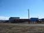

DAVID G. SIMPSON
Personal Web Site
ALASKA PHOTO ALBUM: PAGE 2
The tundra, just outside Barrow. |
Barrow cemetery. The fenced-in area holds recently-reburied centuries-old remains from one of the sod mounds. |
|
Radio/TV antennas outside Barrow. Note that they point almost horizontally, due to Barrow's far north latitude (71° 17' N). |
Barrow High School. |
|
Barrow High School. |
Barrow City Hall. Note the whalebone display in front. The sign indicated that the temperature was 35°F. |
|
Ice rink in Barrow, near the high school and City Hall. |
Piuraagvik (lit. "Recreation Center" in the Iñupiaq language). Contains a basketball court and other facilities, and is adjacent to City Hall. |
|
|  Barrow street scene. All the roads are unpaved dirt and gravel. |
Barrow street scene. The population of Barrow is 4600, and about 2/3 Iñupiaq Eskimo. |
|
Typical home in Barrow. This one was across the street from the hotel. Homes were generally very small, maybe 200-300 square feet -- about the size of a large tool shed. |
Native dances at the Iñupiat Heritage Center. I later got to participate in an Iñupiaq blanket toss here. |
{kind=link}
{kind=link}
{kind=link}
{kind=link}
{kind=link}
{kind=link}
{kind=link}
{kind=link}
{kind=link}
{kind=link}
{kind=link}
{kind=link}
| <<< Previous | Page 2 of 7 | Next >>> |
|---|
Contact Information
I may be contacted at: